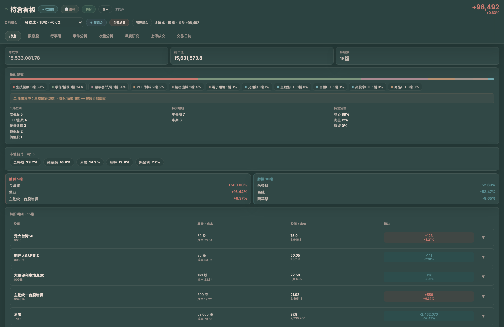
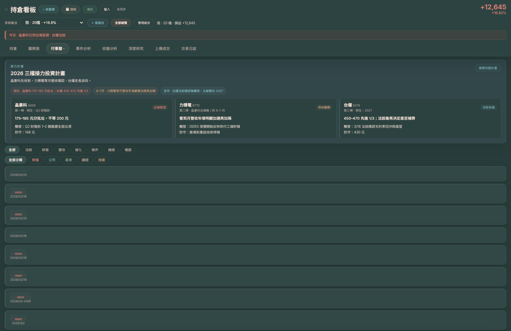
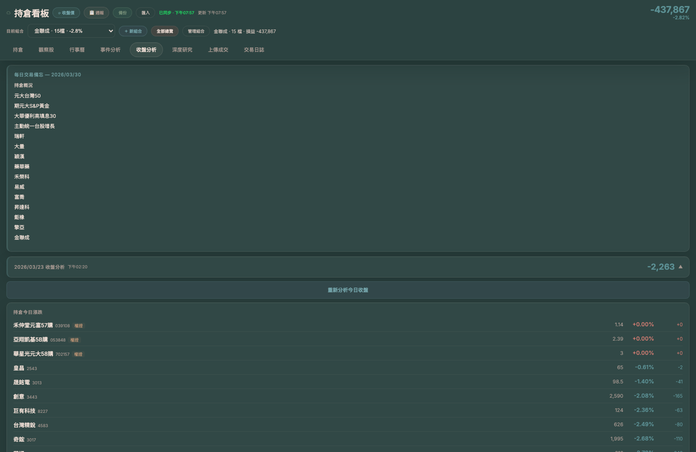

一個整合持倉、事件、AI 分析、策略記憶的閉環投資作業系統
這些問題在使用 LINE 群組、Excel、截圖筆記本的投資者身上每天都在發生。
多組合、多帳戶的持倉散落在券商 App、截圖、Excel 各處，很難在需要決策的當下有完整視圖。
投資邏輯只存在腦袋裡，沒有結構化記錄。復盤時無從比較「預期 vs. 實際」，無法真正學習。
要同時看財報、技術面、籌碼、新聞，人工整合費時又容易遺漏，AI 工具又沒有你的持倉 context。
每次止損後說「下次不這樣」，但沒有機制讓這句話變成具體的規則，下次還是會重蹈覆轍。
花時間做的個股研究存在文件夾裡，下次要用時找不到，或者已經和當前持倉 context 脫節。
對客戶說「看好這檔」，卻沒有具體的催化劑、進場邏輯、停損條件。說服力和可信度都不足。
每個模組獨立可用，但設計目的是讓它們協同運作、互相餵養。
多組合、多帳戶的持倉統一管理。支援截圖 OCR 解析自動回寫部位，即時計算損益與成本結構。
持倉 / 損益 / 多組合將投資論點與具體的「催化事件」掛鉤。事件從待定 → 追蹤 → 結束自動流轉，每一筆持倉的進場邏輯都有可查記錄。
事件生命週期 / 法說 / 月營收 / 政策AI 自動整合持倉現況、待追蹤事件、歷史分析脈絡，生成結構化的收盤復盤報告，對比預期與實際，輸出明天的觀察重點。
AI 復盤 / 結構化報告 / 盲測評分將每次的成功邏輯與失敗教訓沉澱成可供 AI 調用的結構化規則。下次 AI 分析時，會自動引用相關的歷史案例與驗證過的策略。
規則引擎 / 歷史案例 / 策略記憶在同一平台對特定標的發起深度研究，系統自動帶入該標的的歷史分析、持倉記錄與相關事件，讓每次研究都站在之前工作的肩膀上。
個股研究 / 脈絡整合 / 供應鏈將投資決策從「個人看法」轉化為包含持倉論點、催化事件時間軸、風險因素與追蹤結果的結構化報告，提升對客戶的透明度。
週報 / 決策透明 / 可追蹤每一個步驟的產出，都是下一個步驟的輸入。系統的價值隨使用時間累積，不是用了就歸零。
上傳交易截圖或手動輸入，建立真實部位。同時記錄「為什麼買這檔」——催化事件、目標價格、停損條件。
系統自動同步 TWSE 收盤價格、法人籌碼、公開資訊（MOPS 重大訊息）與財報數據，確保每次分析都基於最新資料。
系統根據日期與價格變動，自動追蹤事件進展。法說前 / 法說後、月營收公布前後，事件狀態自動流轉並記錄結果。
AI 整合當前持倉、未結事件、歷史脈絡與市場知識庫，生成結構化復盤報告。包含「預期 vs 實際」比對與明日觀察重點。
每次分析結論、事件教訓、成功 / 失敗案例，都以結構化格式回寫至「策略大腦」。下一次 AI 分析時，自動帶入相關歷史規則。
基於累積的持倉脈絡與歷史分析，對個股發起深度研究，並輸出可對客戶呈現的結構化決策報告，形成完整閉環。
以下為實際系統截圖（2026/03/30），可直接用來向老闆展示使用者的主流程與頁面體驗。
使用者每天先進持倉頁，快速掌握總成本 / 總市值 / 持股數、產業集中度、強弱股與持股明細，確認今天該盯哪些部位。

進入行事曆頁後，使用者會先看接力計畫與事件標籤，再逐筆檢視法說 / 財報 / 催化事件，確認哪些風險與催化已進入決策窗口。

在收盤分析頁，使用者查看當日報告摘要、持倉漲跌與異常波動，讓「今天發生什麼、接下來怎麼做」有結構化依據可留存與回顧。

前端 / 邏輯 / 資料 / AI 明確分離，任何一層出問題都不會拖垮其他層。
從資料完整性、錯誤隔離到 AI 輸出品質，都有對應的機制保護。
功能不是賣點，解決的問題才是。
| 使用者角色 | 現在的痛點 | 這套系統帶來的改變 |
|---|---|---|
| 個人主動投資者 | 決策沒有記錄，無法復盤；教訓反覆犯；AI 工具沒有持倉 context | 每日有結構化復盤；教訓沉澱為可引用規則；AI 分析帶入你的真實部位 |
| 有客戶的理財顧問 | 投資建議說不清楚依據；客戶問「為什麼」時缺乏書面記錄 | 每筆推薦都有可輸出的結構化報告：催化事件、論點、追蹤結果 |
| 權證 / 事件驅動交易者 | 事件窗口追蹤全憑記憶；時間價值消耗沒有警示；停損紀律難以執行 | 事件自動追蹤 + 時間軸警示；歷史案例庫提醒常見失誤 |
| 研究導向投資者 | 研究孤立存在文件夾，和持倉脈絡脫節；換股時歷史脈絡消失 | 研究自動整合持倉脈絡；深度研究歷史可供下一次決策引用 |
台股投資決策工作台。把部位、事件、AI 分析、策略記憶串成閉環，讓每一次投資決策都可追蹤、可復盤、可累積。
六個模組協同運作：持倉管理 → 事件追蹤 → 資料同步 → AI 收盤分析 → 知識沉澱 → 深度研究。每個模組的產出都餵養下一個模組。
系統的價值隨使用時間累積。用越久，策略大腦的規則越準確，AI 分析的 context 越完整，投資決策品質的提升是可量化的。